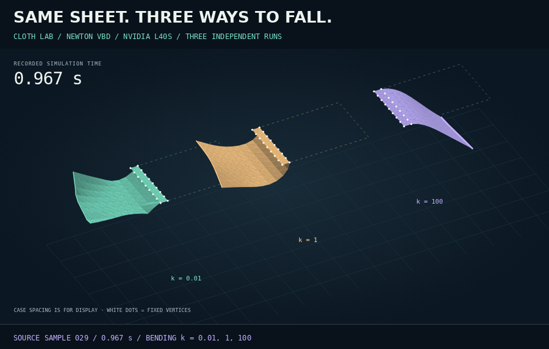

Watch recorded behavior
Browser replays with synchronized views, shot navigation and frame links. The browser plays recorded simulations; nothing is re-simulated on your machine.
Real policy rollouts. Films you can inspect. 3D scenes you can edit. Watch the behavior, step through the evidence, and take the scene with you.
No account or install to watch. Every page is a self-contained recording with its source trace and checksums.
Follow one selected example, then check the full experiment yourself. No setup to explore.
One run succeeds. Two reach the step limit. Put their camera views, measured 3D paths and applied controls on the same timeline, then inspect the policy calls behind the motion.
A selected group of 3 trials from the 30-trial Stress Lab. The full experiment remains available. Desktop browser recommended; the downloaded file opens locally in Rerun 0.37.2 with all six videos included.
Inspect this pair in the browser replay ↗ · Rebuild and verify

Explore recorded GPU cloth deformation or inspect the complete paired policy experiment. Both downloads include their original data, replay tools and checked evidence.
Extract each ZIP into its own folder and open index.html. No account, Python or GPU is required to replay. The 0.8.0 wheel also verifies and exports both experiments.
Quick start guide ↗ · SHA-256 checksums ↓ · Installation packages & all files ↗
Verify all 30 Stress Lab trials and the original SmolVLA episode, then turn the recorded braking comparison into a checked storyboard.
git clone https://github.com/noteflowai/robot-reel.git cd robot-reel # Check all 30 paired trials and the complete evidence. python3 -m robot_reel.cli stress docs/stress # Check the recorded policy episode and its evidence. python3 -m robot_reel.cli vla docs/vla # Turn the included braking comparison into a checked storyboard. python3 -m robot_reel.cli direct docs/compare/braking \ --plan examples/contact-storyboard.json --output artifacts/director
Ready to collect new GPU trials? Follow the recording recipe. Prefer an installation package? See verified downloads and Docker.

Export a slide-ready figure, or open a shared sample and check it against the original recording. Orbit the meshes and take the scene into Blender.

Inspect all 30 trials. Group paired successes, gains and losses; open any seed and export a complete outcome report for independent checks.

Twelve isolated worlds begin at nearly identical angles. Drag to orbit their recorded paths and find where a tiny release difference becomes a 6.26 m gap.

Drag between the original simulation and its Blender replay. Same source samples, same simulator clock, a different camera and scene.

A language instruction becomes an actual SmolVLA rollout. Inspect both camera views, measured state and each applied control.

An MCP agent plans camera cuts, captions and slow motion. Every frame of the editable film maps back to the original recording.

Record Newton physics on CPU, explore measured poses in the browser, then open the animated OpenUSD scene in Blender.

Pollen Robotics' Microduck walks with its official policy. Follow 14 joint targets, measured responses and base motion frame by frame.

Two independent Microduck captures aligned on simulation time. Step both views together and read the measured difference.

Two one-dimensional MuJoCo trials with the same initial conditions and different brake thresholds. Jump to the recorded contact.

Download the braking replay as a Blender project whose keyframes come straight from the recorded trace.

The single-run replay behind the comparison: applied controls, measured state and frame links.
A recorded SO-100 arm scene with shot navigation and per-frame telemetry, the starting point for the example shot plans in the repository.
Browser replays with synchronized views, shot navigation and frame links. The browser plays recorded simulations; nothing is re-simulated on your machine.
Applied controls, measured poses, recorded outcomes, source revisions, hardware and timing. Validators check hashes, timestamps and frame mappings.
Offline episodes, MP4s, JSON and MCAP traces, editable Blender projects and animated OpenUSD scenes.